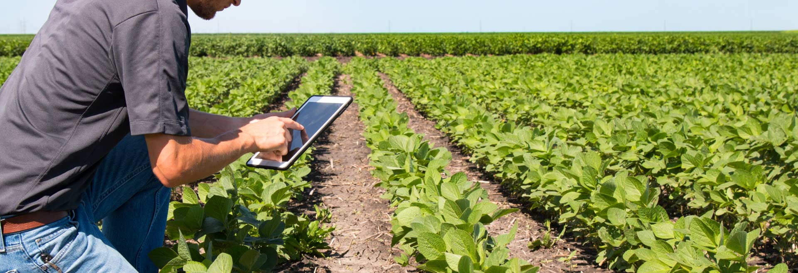

Sobre Nós
Nós somos a EfficientAgro, nosso principal objetivo é deixar o dia a dia do pequeno
produtor agrícola mais prático, tornando-se aliado da Agricultura de Precisão.
Entendemos sua importância em nossa economia e as dificuldades que possam infrentar para crescer
tendo como competidores com as
grandes indústrias, dessa forma, prestamos um atendimento exclusivo, de acordo com a peculiaridade
de cada produtor agrícula.
A partir de dados coletados das áreas geograficamente
referenciadas, analisamos a fundo seu ciclo de produção
desdo plantio até a venda e traçamos, juntos, uma estratégia para melhorar a eficiência,
rentabilidade e rendimento de sua produção, se torna possível a implementação da automação agrícola,
além de tornar mais
assertiva a tomada de decisão, tudo isso com o auxílio dos mais novos tipos de sensores.
Sensor Diédrico
É baseado no princípio de retenção de água por capilaridade, medindo a tensão da água, ou
seja,
a força com que está retida no solo. Ele conta que esse sensor, usado no modo visual para
medir a tensão da água ou a umidade do solo, apresenta sensibilidade para aferir ampla faixa
de tensão de água. Essa característica é utilizada para indicar o momento correto para
irrigar, nos mais diversos tipos de solos e substratos. Com uma irrigação certa, as plantas
aproveitam melhor os nutrientes e crescem bem.
Esse sensor fixo, com haste porosa, é para instalação no solo e possibilita leituras entre
10 e
60 cm de profundidade. É indicado para utilização no campo, em casa de vegetação e em
jardinagem. Pode ser utilizado por produtores rurais, profissionais do ensino, da pesquisa e
público em geral.
Com essa implementação, é possível reduzir em cerca de 40% o consumo de
água e o de energia elétrica utilizada para abastecer os tanques, garantindo um sistema
sustentável de irrigação.
Sensores Elétricos
O monitor de funções é instalado, na cabine da colhedora, estando conectado à todos os sensores utilizados. Isso permite que todas as informações obtidas pelos sensores sejam acessadas pelo monitor, fazendo com que seja possível realizar o monitoramento de todas as operações, fazer alterações e também o cálculo da produtividade dos grãos em uma etapa posterior.
Quando se inicia uma operação, o computador de bordo registra a dose usada e a quantidade total de produto usada. Esses dados são gravados no cartão de memória e podem ser lidos de volta no CROP. Seu registro de cultivo estará então completamente atualizado sem ações adicionais. Através dessa implementação conseguimos otimizar muitos processos e tomar decisões de forma rápida e prática, aumentando a produtividade, tendo como público-alvo agricultores que já estão satisfeitos com sua produção mas desejam melhorá-la. 
Fundadores
Davi Ferreira
Chief Financial Officer (CFO)
Gabriel Antonio
Chief Product Officer (CPO)
Gabriel Itagyba
Chief Technology Officer (CTO)
Isabella Campos
Chief Executive Officer (CEO)
Isabelle Panico
Chief Operating Officer (COO)